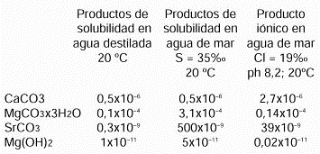
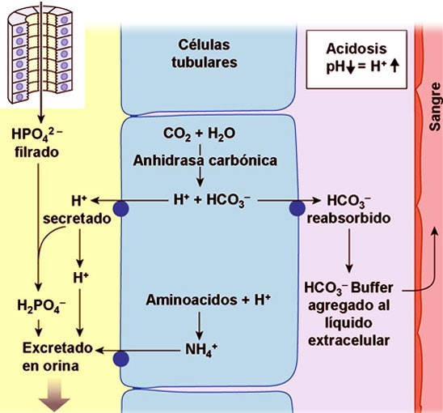

Debemos tener en cuenta la aportación que puede hacer el agua de mar a nuestras vidas.
Algunas características comunes de la sangre y el agua de mar son que ninguna de las dos se puede reproducir en
laboratorio, otra es la capacidad de homeostasis (autorregulación de propiedades), la siguiente es la presencia
específica y similar de oligoelementos (elemento químico indispensable), también podemos encontrar en las dos un
poder antibiótico y autoregenerador (Zobell ya declaraba en 1936 que los vertidos de aguas residuales al mar
quedaban destruidos en dos días).
A modo de resumen, unos cuantos datos de utilidad:
Tabla 1. Diferencias que hay entre el Agua Marina y Plasma Sanguíneo
Una persona que pesa 80 Kg solo pesará 9 Kg en el mar por 20 en el agua dulce (Principio de Arquímedes)
El medio marino es el ecosistema más importante de la Tierra, que recibe de él su nombre de Planeta Azul. Sólo por
su masa térmica y el poder calorífico del agua, constituye el volante de inercia térmico del planeta. Sin él las noches
serían polares, los días un horno y la vida imposible. Es un elemento vital que asegura la conservación de nuestro
medio en unos límites tolerables para la vida.
La radiación solar, fuente de energía primordial, es filtrada por la atmósfera y atemperada por la masa oceánica para
animar la vida terrestre. La oceanografía física y biológica reconoce su efecto fundamental. Su acción sobre la
atmósfera y la superficie de los océanos rige las corrientes atmosféricas que a su vez inducen las corrientes
oceánicas. Mareas, corrientes y diversos movimientos mantienen en continuo las aguas marinas.
Esta agitación, por los cambios que induce, crea las condiciones para un crecimiento orgánico prodigioso. La mitad
de la biomasa terrestre se desarrolla en los océanos. Por ejemplo, al océano austral, de 30 millones de km2, o sea el
10% de la superficie oceánica mundial, se le llama «la bomba planetaria» porque su corriente circumpolar hace
subir a la superficie las aguas cálidas del Atlántico. Este removido enriquece en sales minerales las aguas
superficiales y constituyen una provisión alimenticia inagotable para el fitoplancton.
El ecosistema marino, puesto en marcha por la energía solar, desempeña una función de primer orden en el ciclo del oxígeno del organismo terrestre.
La epifase marina es la sede de intensos intercambios gaseosos. Su composición y su estructura influyen en la
rapidez de estos intercambios gaseosos entre la hidrosfera y la atmósfera. Particularmente, tiende a establecerse un
equilibrio entre el CO2 atmosférico y el CO2 del agua de mar, disuelto o en forma de aniones carbónicos y bicarbónicos.
La actividad de la biomasa marina toma una parte del carbono atmosférico que el pH alcalino del agua de mar
transforma en aniones que entran así en el ciclo del carbono marino para ser metabolizados en él o precipitados
como carbonato. Este sistema confiere al agua de mar un importante poder tampón. Esto es vital para los
organismos marinos, que por lo general no pueden soportar grandes variaciones de pH.
Figura 1. Equilibrio del pH marino y el tampón abierto carbonato-bicarbonato
Si se estudia la regulación de las diferentes sales y oligoelementos que constituyen la matriz salina marina, se
observa que la proporción y la forma en que está presente cada uno de estos elementos no es accidental. Las
proporciones relativas de los 11 cationes principales pueden considerarse constantes. Cualquiera que sea la
naturaleza de los aluviones fluviales, del polvo transportado por el viento (por ejemplo la masa intercambiada en un
año entre el océano y la atmósfera en todo el planeta se evalúa en mil toneladas) o los fondos marinos removidos
por corrientes oceánicas, la concentración relativa de minerales en el océano es estable.
El agua de mar debe su composición al buen funcionamiento del ecosistema. Las plantas y los animales son los
principales responsables de la transformación y sedimentación de los elementos minerales. La regulación de las
diferentes poblaciones de microorganismos dentro del ecosistema afecta directamente a la composición mineral del
medio marino.
Tabla 2. Concentración de los elementos en el agua marina y en su entorno, amitiendo que cada kg de ella
ha disuelto 600 g de roca, como estiman los geógrafos (Ivanoff. 1975)
Tomemos por ejemplo el ciclo del fósforo esquematizado en la figura 2. Se constata que su proporción está fijada
por la «digestión» operada por la biomasa. Lo que es válido para el fósforo lo es también para cada uno de los
elementos disueltos en el medio marino.
Figura 2. Ciclo del fósforo en el océano
De este modo, el ecosistema produce una matriz salina cuya naturaleza y forma no se corresponden en nada con la simple disolución de elementos minerales resultado de su encuentro al azar con el agua. Primero, la proporción está regulada; segundo, su forma es específica. Por ejemplo, la solubilidad del carbonato de calcio presente en el agua de mar es cien veces superior en el medio marino, a la solubilidad observada en su solución en agua destilada.
Tabla 3. Coeficiente de disociación de sales en agua marina y agua destilada (Ivannoff, 1975)
No es exagerado, pues, hablar de organismo marino. Éste posee su propia homeostasis y su comportamiento presenta una analogía impresionante con la del medio interno del organismo humano. En ambos, los mismos elementos desempeñan funciones análogas, por medio de reacciones o de cadenas de reacciones vecinas con el fin de asegurar las mismas funciones y en concentraciones similares. Por ejemplo, en el interior del cuerpo humano, el tampón principal es carbonato-bicarbonato, cuyo ciclo, ligado al mecanismo respiratorio, permite compensar la aportación constante de subproductos metabólicos ácidos a fin de mantener un pH orgánico ligeramente alcalino. Regula igualmente la presión parcial del CO2 y del oxígeno disueltos en los líquidos fisiológicos. En el medio marino este mismo tampón carbonato-bicarbonato permite, en sus intercambios con la atmósfera a través de la epifase marina, regular por una parte la presión parcial del CO2 y oxígeno disueltos y por otra el pH alcalino del agua de mar.
El mantenimiento de la vida precisa unas condiciones fisicoquímicas específicas. A lo largo de la evolución
zoológica, la conquista de biotopos cuyas condiciones están en perpetua variación, ha exigido a los seres vivos la
capacidad de aislarse de las variaciones del medio externo.
La respuesta fisiológica a este apremio ha sido el desarrollo de un medio interno estable, cuyo concepto fue
introducido por Claude Bernard en 1865: «Entre los seres vivos desarrollados, hay por lo menos dos medios que se
han de tener en cuenta: el medio exterior o extraorgánico, y el medio interno o intraorgánico (...) Es el medio interno
de los seres vivos el que está en relación inmediata con las manifestaciones vitales normales o patológicas de los
elementos orgánicos (...) Todos los mecanismos vitales, por variados que sean, no tienen siempre más que un
principio: mantener la unidad de las condiciones de la vida en el medio interno». Bernard considera que «la fijeza del
medio interno es la condición para una vida libre, independiente» y que ésta «supone un perfeccionamiento tal del
organismo, que las variaciones externas están en cada momento compensadas y equilibradas».
A diferencia de un sistema en equilibrio termodinámico sometido a las leyes del entorno, el ser vivo resiste estas
variaciones y presenta estados estabilizados por fenómenos de transporte de materia y de energía, fenómenos
disipativos que permiten al organismo mantener estable su entropía. En 1929, el fisiólogo W.B. Cannon propuso en
Wisdom of the body el término de homeostasis para referirse al mantenimiento del medio interno en un estado
estable, independiente de fluctuaciones externas:
«Los seres superiores constituyen un sistema abierto que presenta numerosas relaciones con el entorno. Las
modificaciones del medio desencadenan reacciones en el sistema o lo afectan directamente, dando lugar a
perturbaciones internas de éste. Tales perturbaciones son normalmente mantenidas en límites estrechos porque
unos ajustes automáticos que sobrevienen en el interior del sistema entran en acción, evitándose de esa manera
amplias oscilaciones. Las reacciones fisiológicas coordinadas que mantienen la mayoría de los estados
estacionarios del cuerpo, son tan complejas y específicas de los organismos vivos, que se ha sugerido el término de
homeostasis».
Esquemáticamente, se puede considerar el medio interno como formado por un conjunto de líquidos que circulan y
rodean las células. El compartimento extracelular constituye el 33% del agua total del organismo, lo que equivale al
20% del peso del cuerpo y aproximadamente 15 litros. Está repartido en:
El estudio del medio interno está particularmente relacionado con la noción de terreno. Por terreno se entiende el conjunto de predisposiciones de una persona a desarrollar ciertos tipos de patologías. Desde un punto de vista fisiológico, el terreno debe identificarse con el medio interno. Su estado refleja perfectamente la salud del organismo e indica sus predisposiciones. El conjunto de desviaciones fisiológicas y desequilibrios patológicos se inscriben en él.
Los grandes equilibrios biológicos interactúan en una dinámica constante, protegiendo los niveles de prioridad de las
funciones vitales. El organismo mantiene constante su temperatura central hipotalámica (37,2ºC) cuyo cambio
(descenso) no podría ser tolerado más que algunos segundos. La homeotermia se realiza en un intervalo de
temperatura limitado y el umbral letal se sitúa por debajo de 26ºC y por encima de 44ºC actúa sobre:
El organismo está compuesto en su mayoría de agua. Por su calor específico elevado constituye una reserva
térmica corporal y asegura la protección frente a grandes variaciones de temperatura. Por otro lado, la elevada
temperatura de evaporación del agua permite una evacuación de calor significativa con el sudor evaporado.
Así, el medio interno interviene a diferentes niveles:
La rapidez de las reacciones bioquímicas está en íntima relación con la concentración de iones H+ del medio. El pH
interviene en la conformación y la actividad de las proteínas, en particular de proteínas enzimáticas.
La concentración de iones H+ en el medio interno es marcadamente constante: el pH de la sangre arterial oscila
entre 7,38 y 7,43 y los límites extremos compatibles con la vida son 7,10 y 7,80.
Frente a las agresiones ácidas o básicas, el organismo pone en juego tres líneas de defensa sucesivas:
Figura 3. Esquema de los mecanismos endocrinos de termorregulación
Sin entrar en detalles del proceso de regulación, es notable la importancia de la función del sector plasmático, que es un intermediario obligatorio para los otros sectores, así como el más accesible para tomar mediciones.
Figura 4. Equilibrio pH orgánico ácido-básico
A. Agua Total
El agua es el principal constituyente del organismo, en promedio es el 60% del peso corporal. Está desigualmente
repartida según los tejidos y los órganos. La homogeneidad del conjunto se logra a través del sistema circulatorio.
Tabla 4. Agua total que contiene el organismo en función de la edad, expresada en porcentaje del peso corporal
El compartimento extracelular actúa como un sistema de circulación de doble corriente del agua y las sustancias
minerales y orgánicas. Este cruce de caminos del movimiento hidroiónico se compone de dos sectores: el sector
vascular en el cual el agua es canalizada por los vasos arteriales a la ida, los vasos venosos y linfáticos a la vuelta,
y, de mucho más alcance, el sector intersticial donde el agua se filtra por los innumerables intersticios celulares.
El líquido intersticial, verdadero «mar interior», constituye un ultrafiltrado de plasma que penetra constantemente los
tejidos próximos al extremo de los capilares arteriales. Unas cifras ilustran la importancia de los fenómenos de
filtración de esta red microcirculatoria: 100.000 Km. de longitud y 6.000 km2 de superficie.
«La bomba cardiaca rinde unos 8.400 litros en 24 horas. 20 litros se filtran por los capilares, 17 litros son
reabsorbidos por éstos y 3 se reabsorben por vía linfática en 24 horas. Los conductos linfáticos evacuan
constantemente el excedente filtrado no reabsorbido y la totalidad del flujo proteico extravasado... El sistema
linfático muestra ser un sistema de bombeo que asegura la estabilidad de la presión intersticial, y a un nivel inferior a
la presión atmosférica...» (Précis de physiologie humaine, Ellipse, 1992).
B. Elementos MInerales
Los elementos minerales del organismo pueden presentarse bajo tres formas:
Figura 5. Gradiente de presioón entre las terminacones arterial y venosa
La homeostasis sólo se realiza gracias a un flujo correctamente regulado del agua, los iones, la energía y la
información intercambiadas con el medio, y este equilibrio se realiza por medio de intercambiadores. Entre el
organismo y el medio se interpone siempre una capa celular: el endotelio del intercambiador pulmonar, células
epiteliales del intercambiador cutáneo, digestivo, renal. En este último intercambiador, la homeostasis
hidroelectrolítica se realiza principalmente por los movimientos de agua y del NaCl.
Tabla 5. Composición de los compartimientos hídricos
Finalmente, la regulación hidromineral, la de los volúmenes líquidos y de su osmolaridad, está asegurada por un
sistema neuro-endocrino, sensible a la composición iónica y al volumen de los medios que bañan las células por una
parte y el medio plasmático por otra.
Los diferentes compartimentos extracelulares tienen una idéntica osmolaridad de 286±4 miliosmoles y son neutros
eléctricamente. Los intercambios entre compartimentos se hacen a través de fenómenos osmóticos, mientras que los
intercambios iónicos entre los líquidos intracelulares y intersticiales se producen esencialmente por transporte activo.
La membrana celular separa de manera radical los dos compartimentos en los que la concentración de cationes,
aniones, proteínas y glucosa es distinta. Los intercambios iónicos por difusión pasiva transmembranar son muy
débiles. El cuanto al agua, se difunde libremente a través de la membrana celular y la pared de los capilares. Su
metabolismo no puede estar disociado del de los electrólitos. La regulación de la hidratación del sector extracelular
depende del sodio y toda modificación será seguida por la modificación paralela del balance hídrico.
La regulación de la hidratación del sector intracelular depende de la osmolidad de los líquidos extracelulares. A este
nivel aparece la importante función del sistema neurohormonal complejo, que actúa en la eliminación de agua y se
encarga sobre todo de regular el balance sódico.
Tabla 6. Equilibrio hidroeléctrico
«Se puede decir, pues, que el ser humano vive en el agua, incluso en el agua corriente, sin que por otra
parte, a pesar de los cambios continuos haya variaciones apreciables en la concentración del agua en los
distintos órganos y tejidos.» (Biochimie medicale, Boulange-Polonowski, Masson 1979).
El agua, solvente y reactivo químico, debe sus propiedades excepcionales a la capacidad de establecer puentes de
hidrógeno. Éstos «son estables a temperatura ambiente pero al contrario que los compuestos covalentes, pueden
romperse o torcerse con un ligero aporte de energía, por ejemplo por efecto de fluctuaciones térmicas del medio. Son
modificables y evolucionan, propiedades fundamentales en biología, lo que confiere al agua propiedades excepcionales.
Desempeñan una función esencial en el proceso de transferencia de protones entre las moléculas rebajando las barreras
energéticas, favoreciendo la formación de compuestos intermedios, fenómeno esencial en el almacenamiento de la
energía fotónica, y activando la hidrólisis. Precisamente la quimotripsina pancreática actúa mediante la trasferencia de
protones. Por último se organizan en configuraciones específicas donde cada oxígeno forma un tetraedro con sus cuatro
vecinos (...) A la temperatura de los seres vivos, la ruptura de ciertos enlaces acarrea la formación de estructuras de 6, 7
u 8 moléculas, permitiendo al agua organizarse alrededor de un ion, lo cual aumenta su compactación.» (Précis de
physiologie humaine, Ellipse, 1992).